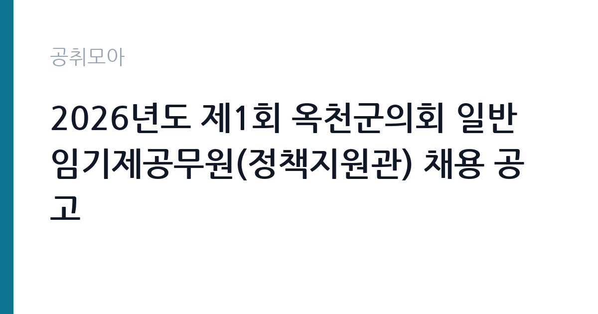

[지자체] 2026년도 제1회 옥천군의회 일반임기제공무원(정책지원관) 채용 공고
충청북도 옥천군 의회사무과 · 충북 · 마감 2026-11-03 (D-17) · 출처 나라일터

한눈에 보는 모집 조건
| 기관 | 충청북도 옥천군 의회사무과 |
|---|---|
| 공고명 | 2026년도 제1회 옥천군의회 일반임기제공무원(정책지원관) 채용 공고 |
| 고용형태 | 임기제 |
| 근무지 | 충북 |
| 게시일 | 2026-10-17 |
| 마감일 | 2026-11-03 (D-17) |
지원자격, 이렇게 읽으세요
- 8급 2명
- 접수 ~2026-11-03 마감
- 세부 조건은 원문 공고문 확인
지방공무원법 제31조의 임용 결격사유가 없고 응시연령(18세 이상)을 충족하면 지원할 수 있습니다. 다만 직급이 '8급 상당'으로 적혀 있어도 신분은 정규 지방공무원이 아니라 계약기간을 정한 임기제공무원입니다. 호봉 승진이나 정년 개념이 적용되지 않고, 임용일로부터 2년의 계약으로 시작합니다. 정책지원관은 조사·분석 능력을 요구하는 직위여서 학위나 관련 실무경력 요건이 공고문에 붙어 있는지 반드시 확인해야 하며, 경력은 입사지원서에 적은 것만 인정되는 경우가 많습니다.
이 공고의 포인트
정책지원관은 2022년 지방자치법 개정으로 지방의회에 도입된 제도로, 의원 개인의 보좌가 아니라 상임위원회 단위의 입법·정책 조사를 전담하는 자리입니다. 옥천군의회는 규모가 크지 않아 2명이 조례 검토부터 예산 심사 자료, 의정 홍보까지 폭넓게 맡게 됩니다. 좁은 조직에서 의사결정 과정을 가까이서 보고 배울 수 있다는 점이 이 공고의 실질적인 장점입니다.
전형은 어떻게 진행되나
원문 공고문은 서류전형과 면접시험을 기본으로 하고, 최종 단계에서 신원조사와 결격사유 확인을 거쳐 임용하는 절차를 안내합니다. 인원이 2명뿐이므로 서류에서 경력의 구체성이 거의 결정적입니다. 추상적으로 '정책 업무 경험'이라고 쓰기보다 어떤 조례·예산·통계 자료를 다뤘는지 사례 단위로 적어야 서류 통과 가능성이 올라갑니다. 전형 일정은 공고문에 별도로 적혀 있으니 접수 후 일정표를 다시 확인하시기 바랍니다.
원문에서 확인한 전형 방식
충북 옥천군의회에서 근무할 일반임기제공무원을 아래와 같이 공개모집하오니 유능한 인재들의 많은 응모를 바랍니다. *채용분야: 정책지원관 *재용직급: 8급(지방행정서기) *채용인원: 2명 *채용기간: 임용일로부터 2년 *보수수준: 44,296천원 (시간외근무수당, 가족수당, 정액급식비 등 별도 지급) *원서접수: 2026년 10월 17일 ~ 10월27일 *기타일정 및 응시방법 등: 공고문 참조 *채용문의: 043-730-3932(의회사무과 의정팀)
이런 분께 추천해요
- 지방의회·공공기관에서 정책 연구나 입법 조사 업무를 해본 경력자
- 조례·예산안을 읽고 쟁점을 요약하는 문서 작성에 자신 있는 지원자
- 충북 옥천 생활권에서 장기간 근무할 수 있는 사람
지원 전 체크리스트
- 원문 접수기간(10월 27일까지)과 나라일터 표기 마감일(11월 3일)이 다르므로 10월 27일 기준으로 준비할 것
- 임기제공무원은 계약직 신분이며 정규 공무원 전환을 전제하지 않는다는 점 확인
- 경력증명서·자격증 사본을 접수 마감 전에 발급받아 둘 것
- 블라인드 채용 규정상 학교명·출신지·가족관계 기재 금지 항목 점검
모집 일정과 제출 타이밍
접수는 2026년 10월 17일부터이며, 공고문에는 10월 27일까지로 적혀 있습니다. 나라일터 화면에는 11월 3일 마감으로 표시되어 있어 혼동이 생기기 쉬운데, 접수처 기준은 공고문 문구이므로 10월 27일 이전에 제출을 끝내는 편이 안전합니다. 서류 심사와 면접 일정, 최종 발표일은 원문 공고문에 별도로 기재되어 있습니다.
직무 이해하기: 지자체
정책지원관의 하루는 상임위 회의 준비에서 시작합니다. 조례안과 예산·결산 심사 자료를 읽고 쟁점과 대안을 정리하며, 의원의 시정질문·5분 자유발언에 들어갈 근거 수치를 찾습니다. 옥천군은 포도·복숭아 같은 과수 농업과 대청호 주변 관광, 정지용 생가로 대표되는 문화 자원이 주요 정책 영역이므로, 지역 산업과 재정 구조를 이해할수록 자료의 완성도가 높아집니다. 회의록 검토, 집행부 부서와의 자료 협조, 의정 소식지·누리집 콘텐츠 정리까지 함께 맡는 경우가 많습니다.
자기소개서 작성 팁
자기소개서는 '무엇을 조사해 어떤 판단을 냈는가'로 채우는 것이 좋습니다. 예를 들어 특정 사업의 예산 대비 집행률을 정리해 문제점을 지적한 경험, 조례 개정안의 쟁점을 비교표로 만든 경험처럼 결과물이 남는 사례가 설득력 있습니다. 옥천군의회라는 조직을 언급할 때는 규모가 작아 실무 전반을 맡는다는 점을 이해하고 있다는 신호를 주면 좋습니다. 지역 정책에 대한 관심은 막연한 표현보다 실제로 확인한 자료를 근거로 쓰십시오.
면접 준비 포인트
면접에서는 특정 조례나 예산 쟁점을 주고 찬반 근거를 정리하게 하는 형태가 자주 나옵니다. 결론만 말하기보다 이해관계자별로 무엇이 걸리는지 나눠 설명하는 연습이 필요합니다. 의원과 집행부 사이에서 중립을 지키는 태도, 비공개 자료를 다루는 보안 의식도 평가 대상입니다. 모르는 수치는 추정해서 말하지 말고 '원문 자료로 확인하겠습니다'라고 답하는 편이 신뢰를 줍니다.
급여·근무조건 읽는 법
공고문에 명시된 보수는 연 44,296천원(4,429만6천원)이며, 여기에 시간외근무수당·가족수당·정액급식비가 별도로 붙습니다. 이 금액은 세금과 4대보험을 떼기 전 기준이므로 실수령액은 이보다 적습니다. 지방공무원 8급 연봉 하한액을 기준으로 산정된 임기제 보수이고, 호봉 승급이나 정년 보장은 적용되지 않습니다. 계약은 2년 단위이며, 옥천군의회는 앞선 공고에서 근무실적에 따라 5년 범위 안에서 연장할 수 있다고 안내한 바 있습니다. 이번 공고의 연장 조건은 원문에서 확인하십시오.
자주 묻는 질문
- 정규직 공무원으로 임용되는 건가요?
아닙니다. 일반임기제공무원은 2년의 계약기간을 정해 임용되는 계약직 신분이며, 8급 상당은 보수 수준을 나타내는 표현입니다. - 접수 마감일이 두 개로 보이는데 어느 쪽인가요?
원문 공고문에는 10월 27일까지로 적혀 있고 나라일터에는 11월 3일로 표시됩니다. 접수처는 공고문을 기준으로 운영되므로 10월 27일 이전 제출을 권합니다. - 연봉 4,429만원은 실수령액인가요?
세전 금액입니다. 여기에 시간외근무수당·가족수당·정액급식비가 별도로 더해지고, 세금과 4대보험이 공제된 금액이 실수령액이 됩니다.
함께 보면 좋은 공고
[지자체] 2026년 제4회 인천광역시경제자유구역청 지방임기제공무원 채용시험 시행계획 공고 — 마감 2026-10-27[지자체] 보령시 직장운동경기부(유도팀) 지도자(감독) 공개 채용 공고 — 마감 2026-10-29[지자체] 2026년 제1회 울산광역시 공무직근로자 채용시험 계획 공고 — 마감 2026-10-28출처: 나라일터 공개정보를 바탕으로 공취모아가 정리한 안내글입니다. 모집 조건·일정은 변경될 수 있으니 지원 전 반드시 원문 공고문을 확인하세요. 본 글은 정보 제공용이며 합격을 보장하지 않습니다.